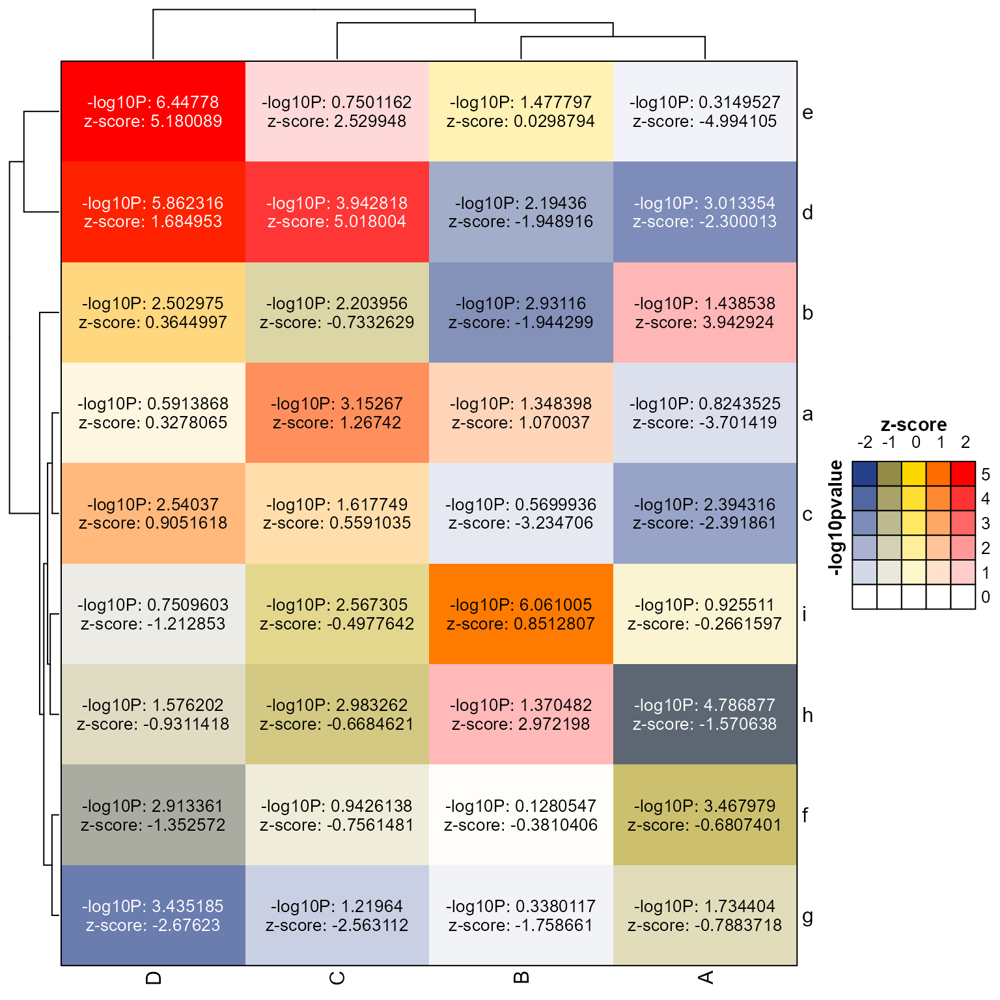
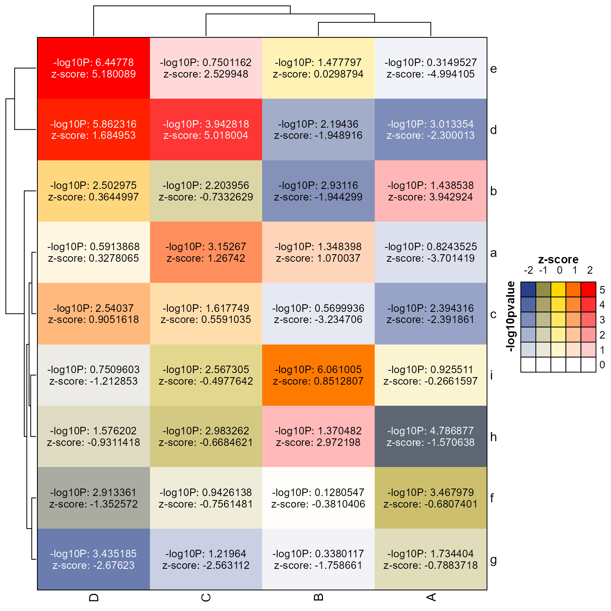

ComplexHeatmap cell function with bivariant color
Source:R/jamenrich-bivariatecolor.R
cell_fun_bivariate.RdComplexHeatmap cell function with bivariant color
cell_fun_bivariate(
m,
prefix = "",
suffix = "",
cex = 1,
col_hm,
outline = FALSE,
outline_style = c("none", "contrast", "lighter", "darker", "black", "same"),
abbrev = FALSE,
show = NULL,
rot = 0,
sep = "\n",
mcolor = NULL,
pch = NULL,
size_fun = NULL,
size_by = 1,
grid_color = "grey80",
type = c("bivariate", "univariate"),
verbose = FALSE,
...
)Arguments
- m
listof 2 or morematrixobjects. The first twomatrixobjects are used for the bivariate color.- prefix, suffix
charactervectors that define a prefix and suffix for each value inmfor each cell.- cex
numericadjustment for the fontsize used for each label- col_hm
functionwhose first two arguments acceptnumericvalues, and which returns a single color. Note that whenmcoloris provided, this argument is ignored.- outline
logicalindicating whether to draw an outline around each heatmap cell- abbrev
logicalindicating whether numeric values should be abbreviated usingjamba::asSize(..., kiloSize=1000)which effectively reduces large numbers tokfor thousands,Mfor millions (M for Mega),Gfor billions (G for Giga), etc.- show
numericindicating which list elements inmshould be used to formulate a cell label, orNULLto use no label.- rot
numericrotation in degrees, to rotate labels inside each heatmap cell. Mainly useful for heatmaps with extremely tall cells, userot=90for vertical text.- sep
characterstring used as a separator between multiple labels inside each cell, used only whenshowhas more than one value.- mcolor
charactermatrix of R colors, with samenrow()andncol()or each matrix inm. Whenmcoloris supplied, the colors are used directly, andcol_hmis not used.- type
characterstring indicating whether the color function uses bivariate or univariate logic. This argument is intended to allow this function to be used in both scenarios for consistency.- ...
additional arguments are passed to
col_hm()to allow custom options relevant to that function.
Details
This function serves as a convenient method to use a bivariate color scale (biscale) to color heatmap cells.
See:
https://kwstat.github.io/pals/
https://nowosad.github.io/post/cbc-bp2/
https://cran.r-project.org/web/packages/biscale/vignettes/biscale.html
This function takes two numeric data matrices, a color function
that accepts two numeric values as input and returns a color.
This function can also optionally display a text label
inside each heatmap cell, use argument show to indicate which matrix
or matrices in m to use for the label.
See also
Other jam utility functions:
avg_angles(),
avg_colors_by_list(),
call_fn_ellipsis_deprecated(),
collapse_mem_clusters(),
colorRamp2D(),
deconcat_df2(),
display_colorRamp2D(),
enrichList2geneHitList(),
find_colname(),
gsubs(),
handle_igraph_param_list(),
isColorBlank(),
make_legend_bivariate(),
make_point_hull(),
mem_find_overlap(),
order_colors(),
rank_mem_clusters(),
rotate_coordinates(),
subgraph_jam(),
xyAngle()
Examples
set.seed(12);
m <- matrix(rnorm(36)*2.5, ncol=4)
colnames(m) <- LETTERS[1:4]
rownames(m) <- letters[1:9]
m2 <- m;
m2[] <- abs(rnorm(36)*3);
mcolor <- matrix(ncol=3,
c("white", "white", "white",
"royalblue4", "gold", "red"),
byrow=TRUE);
col_bivariate <- colorRamp2D(
column_breaks=seq(from=-2, to=2, length.out=3),
row_breaks=seq(from=0, to=5, length.out=2),
mcolor);
display_colorRamp2D(col_bivariate)
 # the heatmap can be created in one step
hm <- ComplexHeatmap::Heatmap(m * m2,
border=TRUE,
col=col_bivariate,
heatmap_legend_param=list(
color_bar="discrete",
border=TRUE,
at=-4:4),
cell_fun=cell_fun_bivariate(list(m, m2),
col_hm=col_bivariate,
prefix=c("-log10P: ", "z-score: "),
show=2:1),
show_heatmap_legend=FALSE,
)
#> Warning: <anonymous>: ... may be used in an incorrect context: ‘col_hm(x = cell_value1, y = cell_value2, ...)’ (/Users/wardjm/Projects/Ward/multienrichjam/R/jamenrich-bivariatecolor.R:355-357)
lgds <- make_legend_bivariate(col_bivariate,
ylab="-log10pvalue",
xlab="z-score");
ComplexHeatmap::draw(hm, annotation_legend_list=lgds)

lgds <- make_legend_bivariate(col_bivariate,
row_breaks=seq(from=0, to=1, by=0.25),
ylab="-log10pvalue");
ComplexHeatmap::draw(hm, annotation_legend_list=lgds)
# the heatmap can be created in one step
hm <- ComplexHeatmap::Heatmap(m * m2,
border=TRUE,
col=col_bivariate,
heatmap_legend_param=list(
color_bar="discrete",
border=TRUE,
at=-4:4),
cell_fun=cell_fun_bivariate(list(m, m2),
col_hm=col_bivariate,
prefix=c("-log10P: ", "z-score: "),
show=2:1),
show_heatmap_legend=FALSE,
)
#> Warning: <anonymous>: ... may be used in an incorrect context: ‘col_hm(x = cell_value1, y = cell_value2, ...)’ (/Users/wardjm/Projects/Ward/multienrichjam/R/jamenrich-bivariatecolor.R:355-357)
lgds <- make_legend_bivariate(col_bivariate,
ylab="-log10pvalue",
xlab="z-score");
ComplexHeatmap::draw(hm, annotation_legend_list=lgds)

lgds <- make_legend_bivariate(col_bivariate,
row_breaks=seq(from=0, to=1, by=0.25),
ylab="-log10pvalue");
ComplexHeatmap::draw(hm, annotation_legend_list=lgds)
 # heatmap using point circles
ctmax <- 6;
point_size_max <- 12;
point_size_min <- 1;
size_fun_custom <- approxfun(
x=c(1, ctmax),
yleft=0,
ties="ordered",
yright=point_size_max,
y=c(1,
point_size_max));
ct_ticks <- seq(from=0, to=6);
ct_tick_sizes <- size_fun_custom(ct_ticks);
hm2 <- ComplexHeatmap::Heatmap(m * m2,
border=TRUE,
col=col_bivariate,
heatmap_legend_param=list(
color_bar="discrete",
border=TRUE,
at=-4:4),
cell_fun=cell_fun_bivariate(list(m, m2),
pch=21,
size_fun=size_fun_custom,
size_by=2,
outline_style="black",
col_hm=col_bivariate,
prefix=c("-log10P: ", "z-score: "),
show=NULL),
show_heatmap_legend=FALSE,
)
#> Warning: <anonymous>: ... may be used in an incorrect context: ‘col_hm(x = cell_value1, y = cell_value2, ...)’ (/Users/wardjm/Projects/Ward/multienrichjam/R/jamenrich-bivariatecolor.R:355-357)
ComplexHeatmap::draw(hm2, annotation_legend_list=lgds)
# heatmap using point circles
ctmax <- 6;
point_size_max <- 12;
point_size_min <- 1;
size_fun_custom <- approxfun(
x=c(1, ctmax),
yleft=0,
ties="ordered",
yright=point_size_max,
y=c(1,
point_size_max));
ct_ticks <- seq(from=0, to=6);
ct_tick_sizes <- size_fun_custom(ct_ticks);
hm2 <- ComplexHeatmap::Heatmap(m * m2,
border=TRUE,
col=col_bivariate,
heatmap_legend_param=list(
color_bar="discrete",
border=TRUE,
at=-4:4),
cell_fun=cell_fun_bivariate(list(m, m2),
pch=21,
size_fun=size_fun_custom,
size_by=2,
outline_style="black",
col_hm=col_bivariate,
prefix=c("-log10P: ", "z-score: "),
show=NULL),
show_heatmap_legend=FALSE,
)
#> Warning: <anonymous>: ... may be used in an incorrect context: ‘col_hm(x = cell_value1, y = cell_value2, ...)’ (/Users/wardjm/Projects/Ward/multienrichjam/R/jamenrich-bivariatecolor.R:355-357)
ComplexHeatmap::draw(hm2, annotation_legend_list=lgds)